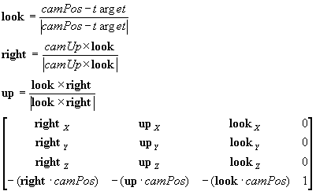

#include <nitro/gx/g3_util.h>
void G3_LookAt( const VecFx32 * camPos, const VecFx32 * camUp, const VecFx32 * target, MtxFx43 * mtx );
| camPos | Pointer to camera's position vector |
| camUp | Pointer to camera's upward vector |
| target | Pointer to camera's focal point |
| mtx | Pointer to a 4x3 matrix. |
None.
This function sets the matrix mode to Position/Vector mode and sets the camera matrix as the current matrix. When mtx is not NULL, the camera matrix will also be set in *mtx.*There is no need for *camUp to be normalized. The matrix that is set is as shown below.

2004/01/19 Initial version.
CONFIDENTIAL